7号道路、玉虹市、玉虹道馆
通关后
7号道路
7号道路Bulbapedia 原图
7号道路是一条短路，东边连接金黄市，西边连接玉虹市。第二条地下通道的西端出口在这里，但因为有训练家在里面吵闹对战，管理部门已经无限期关闭了隧道。
| 宝可梦 | 版本 | 方式 | 等级 | 出现率 |
|---|---|---|---|---|
| 心金 | 草丛 | Lv.17 | 30% | |
| 心金 | 草丛 | Lv.15, 19 | 早 10% · 日 0% · 夜 0% | |
| 心金 | 草丛 | Lv.19 | 早 0% · 日 5% · 夜 0% | |
| 魂银 | 草丛 | Lv.15 | 早 5% · 日 0% · 夜 0% | |
| 心金 / 魂银 | 草丛 | Lv.19 | 10% | |
| 心金 / 魂银 | 草丛 | Lv.17 | 早 30% · 日 30% · 夜 0% | |
| 魂银 | 草丛 | Lv.18 | 20% | |
| 魂银 | 草丛 | Lv.15 | 早 0% · 日 5% · 夜 0% | |
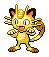 喵喵 | 魂银 | 草丛 | Lv.17 | 30% |
| 魂银 | 草丛 | Lv.19 | 5% | |
| 心金 | 草丛 | Lv.18 | 20% | |
| 心金 | 草丛 | Lv.15 | 早 0% · 日 5% · 夜 0% | |
| 心金 / 魂银 | 草丛 | Lv.17 | 早 0% · 日 0% · 夜 10% | |
| 心金 | 草丛 | Lv.17, 19 | 早 0% · 日 0% · 夜 25% | |
| 魂银 | 草丛 | Lv.17 | 早 0% · 日 0% · 夜 20% | |
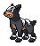 戴鲁比 | 心金 / 魂银 | 草丛 | Lv.15 | 早 0% · 日 0% · 夜 5% |
| 头锤（A 组树） | ||||
| 心金 / 魂银 | 头锤 | Lv.15-17 | 50% | |
| 心金 / 魂银 | 头锤 | Lv.15-17 | 30% | |
| 心金 / 魂银 | 头锤 | Lv.15-17 | 20% | |
| 头锤（B 组树） | ||||
| 心金 / 魂银 | 头锤 | Lv.18-20 | 80% | |
| 心金 / 魂银 | 头锤 | Lv.18-20 | 20% | |
| 特殊 | ||||
| 心金 / 魂银 | 丰缘音乐 | Lv.17 | 20% | |
| 心金 / 魂银 | 丰缘音乐 | Lv.18 | 20% | |
| 心金 / 魂银 | 神奥音乐 | Lv.17-18 | 40% | |
| 道具 | 版本 | 位置 / 获得方法 |
|---|---|---|
| 心金 / 魂银 | 草丛北边 |
玉虹市
玉虹市Bulbapedia 原图
玉虹市位于东边的7号道路和西边的16号道路之间。西北边的玉虹百货出售各种道具，玉虹公寓则相当于一家旅馆。来访者可以去市中心的游戏城碰碰运气，再到隔壁的奖品交换所兑换奖品。玉虹道馆在城镇西南边的一座小山上。
| 宝可梦 | 版本 | 方式 | 等级 | 出现率 |
|---|---|---|---|---|
| 头锤（A 组树） | ||||
| 心金 / 魂银 | 头锤 | Lv.15-17 | 50% | |
| 心金 / 魂银 | 头锤 | Lv.15-17 | 30% | |
| 心金 / 魂银 | 头锤 | Lv.15-17 | 20% | |
| 头锤（B 组树） | ||||
| 心金 / 魂银 | 头锤 | Lv.18-20 | 80% | |
| 心金 / 魂银 | 头锤 | Lv.18-20 | 20% | |
| 冲浪 | ||||
| 心金 / 魂银 | 冲浪 | Lv.15-20 | 90% | |
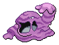 臭臭泥 | 心金 / 魂银 | 冲浪 | Lv.15 | 10% |
| 道具 | 版本 | 位置 / 获得方法 |
|---|---|---|
| 招式学习器67（回收利用） | 心金 / 魂银 | 城市北侧，林荫小路的西端 |
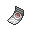 诅咒之符 | 心金 / 魂银 | 玉虹公寓，屋顶上的男人讲完故事后给予（晚上） |
| 心金 / 魂银 | 城市南偏东南部的死胡同（隐藏道具） | |
| 草苗龟面具 | 心金 / 魂银 | 玉虹百货（2F），吉宪给予 |
| 小火焰猴面具 | 心金 / 魂银 | 玉虹百货（2F），吉宪给予 |
| 波加曼面具 | 心金 / 魂银 | 玉虹百货（2F），吉宪给予 |
| 招式学习器19（终极吸取） | 心金 / 魂银 | 玉虹道馆，打败道馆馆主莉佳后由她给予 |
| 之后再来 | ||
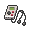 ＧＢ播放器 | 心金 / 魂银 | 玉虹公寓（3F），集齐全部 16 枚徽章后由音乐设计师给予 |
玉虹公寓
3F
进入玉虹公寓，坐 1F 的电梯上 3F，就是 Game Freak 开发室。你一走出电梯，琴音/响就带着玛力露跑过来打招呼。她/他兴奋地说，音乐设计师刚给她/他看了一台很酷的装置：一台能播放原本出自 Game Boy 的复古音乐的高科技机器。设计师好像想把它送给赢得全部关都徽章的人。琴音/响鼓励你去争取，然后匆匆离开。音乐设计师站在角落的大地球仪旁边。集齐全部 16 枚徽章后和他说话，他会送你ＧＢ播放器。
屋顶
太阳下山后，进入玉虹公寓，走楼梯上 2F。这里有两部电梯。左边那部从这里坐不了，它往返于 1F、3F 和屋顶之间。改坐右边那部，就能到屋顶的内侧区域。和外面房间里的男人说话，会听到一个恐怖故事；听完整个故事，他会送你一个诅咒之符。
餐厅
城镇南边的餐厅正在举办大胃王比赛。看来神奥的道馆馆主阿李也不是好惹的！
游戏城
游戏城Bulbapedia 原图
隔壁的奖品都很贵，想全部换到需要大量代币。和满金市的游戏城一样，玉虹游戏城也只有霹雳电球翻牌这一种卡牌游戏。
奖品交换所
奖品交换所Bulbapedia 原图
和满金游戏城一样，这里也能用代币换稀有的宝可梦和道具。
| 商品 | 价格 |
|---|---|
| 招式学习器58（挺住） | 2,000 代币 |
| 招式学习器32（影子分身） | 4,000 代币 |
| 招式学习器10（觉醒力量） | 6,000 代币 |
| 招式学习器29（精神强念） | 10,000 代币 |
| 招式学习器74（陀螺球） | 10,000 代币 |
| 招式学习器68（终极冲击） | 15,000 代币 |
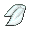 丝绸围巾 | 1,000 代币 |
| 1,000 代币 | |
| 1,000 代币 | |
| 1,000 代币 |
| 商品 | 价格 |
|---|---|
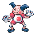 魔墙人偶 Lv.15 | 3,333 代币 |
| 6,666 代币 | |
| 9,999 代币 |
觉醒的力量
和柜台旁的吉他手说话，他说自己有一项秘密技能，能看出宝可梦觉醒力量的属性。觉醒力量这个招式的属性取决于每只宝可梦的个体能力，可以帮宝可梦弥补弱点。给他看一只宝可梦，他会告诉你它使用觉醒力量时会是什么属性。
玉虹百货
玉虹百货是关都最大的商店，训练家想要的道具这里几乎都有。
玉虹百货 1FBulbapedia 原图
玉虹百货 2FBulbapedia 原图
2F
二楼是训练家市场，出售超级球、好伤药之类的日常道具。
| 商品 | 价格 |
|---|---|
| ₽300 | |
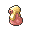 好伤药 | ₽700 |
| ₽1200 | |
| ₽2500 | |
| ₽1500 | |
| ₽100 | |
| 解麻药 | ₽200 |
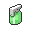 灼伤药 | ₽250 |
| ₽250 | |
| ₽250 | |
| ₽600 | |
| ₽200 | |
| ₽600 | |
| ₽1200 | |
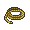 离洞绳 | ₽550 |
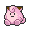 皮皮玩偶 | ₽1000 |
| ₽350 | |
| ₽500 | |
| ₽700 | |
| ₽50 | |
| ₽50 | |
| Bubble Mail | ₽50 |
| ₽50 |
戴面具的男人
2F 的柜台附近站着一个戴面具的男人。和他说话，他以为你想要他的吉宪面具，坚决不肯给。接着他发现你感兴趣的是他刚才在看的另一个面具，于是送你草苗龟面具（装饰道具）。之后他还会送你小火焰猴面具和波加曼面具。他已经付过钱了，说是「最会戴面具的人」送你的礼物。
玉虹百货 3FBulbapedia 原图
3F
三楼是招式学习器商店，可以买到好几种稀有招式的学习器。
| 商品 | 价格 |
|---|---|
| 招式学习器21（迁怒） | ₽1000 |
| 招式学习器27（报恩） | ₽1000 |
| 招式学习器87（虚张声势） | ₽1500 |
| 招式学习器78（诱惑） | ₽1500 |
| 招式学习器12（挑衅） | ₽1500 |
| 招式学习器41（无理取闹） | ₽1500 |
| 招式学习器20（神秘守护） | ₽2000 |
| 招式学习器28（挖洞） | ₽2000 |
| 招式学习器76（隐形岩） | ₽2000 |
| 招式学习器55（盐水） | ₽3000 |
| 招式学习器72（雪崩） | ₽3000 |
| 招式学习器79（恶之波动） | ₽3000 |
玉虹百货 4FBulbapedia 原图
4F
四楼是礼品店，出售一些纪念品。
| 商品 | 价格 |
|---|---|
| ₽50 | |
| ₽50 | |
| ₽50 |
玉虹百货 5FBulbapedia 原图
5F
五楼是对战用品区，出售对战道具和营养剂。
| 商品 | 价格 |
|---|---|
| ₽350 | |
| ₽500 | |
| 防御强化 | ₽550 |
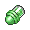 能力防守 | ₽700 |
| ₽650 | |
| ₽950 | |
| 特攻强化 | ₽350 |
| ₽350 | |
| ₽9800 | |
| ₽9800 | |
| ₽9800 | |
| ₽9800 | |
| ₽9800 | |
| ₽9800 |
玉虹百货（屋顶）Bulbapedia 原图
6F
屋顶花园有野餐区和几台自动售货机。
| 商品 | 价格 |
|---|---|
| ₽200 | |
| ₽300 | |
| ₽350 |
玉虹道馆
玉虹道馆Bulbapedia 原图
| 玉虹市宝可梦道馆 馆主：莉佳 热爱自然的公主 |
玉虹道馆专精草属性宝可梦。草属性招式对地面、岩石、水属性效果绝佳，而草属性宝可梦怕虫、火、飞行、冰、毒属性招式。
道馆设计成温室，里面摆着很多插花。用居合斩开路，穿过第一道拱门。左转，经过双胞胎 Jo & Zoe，然后按顺时针方向走一个「C」形。绕过道馆中间的花坛，穿过东南角的拱门，然后往北。经过野营女 Tanya 后往西。经过大姐姐 Julia，穿过中间和西边的拱门。再用两次居合斩砍掉两棵小树，就到馆主那里了。
莉佳先派出毽子棉。寄生种子和终极吸取都能吸取对手的体力，大晴天会触发它的叶绿素特性，让本来就很高的速度更快。它带飞行属性，被冰属性攻击打会受巨大伤害。她的蔓藤怪能用催眠粉进一步干扰对手，原始之力可以反击草属性的常见克星：火、冰、虫、飞行属性宝可梦。大食花的飞叶风暴威力很大，但每用一次特攻就会下降。植物靠阳光获得养分，莉佳剩下的两只宝可梦也要靠大晴天配合招式。在强烈阳光下，大食花用光合作用回复的体力比平时多，美丽花也一样。在这种天气下，美丽花不用蓄力就能发出最强的招式日光束。
| 训练家 | 宝可梦 | 奖金 |
|---|---|---|
| 双胞胎 Jo & Zoe | 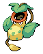 大食花 Lv.47 | ₽1504 |
| 迷你裙 Michelle | 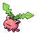 毽子草 Lv.45 | ₽736 |
| 野营女 Tanya | ₽784 | |
| 大姐姐 Julia | 派拉斯特 Lv.47 | ₽2632 |
| 宝可梦 | 详情 |
|---|---|
Lv.51 · 草 / 飞行 | 特性：叶绿素 招式：寄生种子、急速折返、终极吸取、大晴天 |
Lv.52 · 草 | 特性：叶绿素 招式：原始之力、绞紧、终极吸取、催眠粉 |
| 大食花 Lv.56 · 草 / 毒 | 特性：叶绿素 招式：大晴天、光合作用、飞叶风暴、打草结 |
Lv.56 · 草 | 特性：叶绿素 携带： 招式：大晴天、日光束、终极吸取、光合作用 |
对战结束后，莉佳会授予你彩虹徽章。她还会送你招式学习器19（终极吸取）作为奖品。
原文：Bulbapedia《Walkthrough:Pokémon HeartGold and SoulSilver/Part 21》（修订版本 4453066，），作者见原文页面历史。本页由 Eli 的杂货间翻译为中文，并有改动（重新排版、精简部分图注）。原文与译文均以 CC BY-NC-SA 2.5 授权。配图来自原站，版权归原作者与游戏厂商。